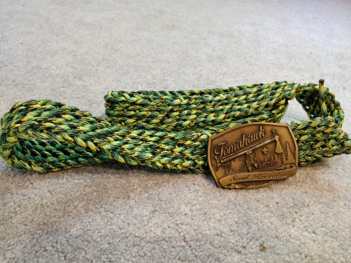
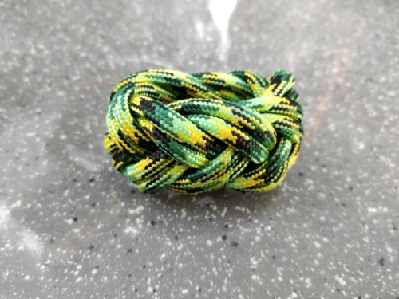
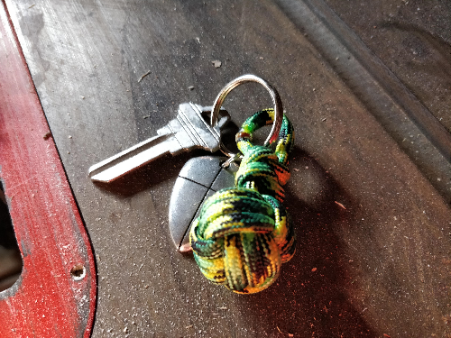
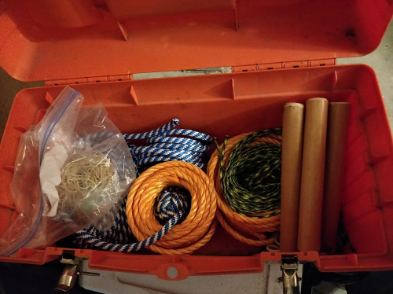

 Above is a belt I wove from paracord. The belt is tied with knots resembling the cableman's knot meaning if the last couple hitches are undone the entire belt can be unspooled in one pull.
 Above is a Spanish Ring Knot I tied in paracord. The SRK is a beutiful knot that works well as a napkin ring or kneckerchief tie.
 An example keychain I tied containing a monkey's fist tied to a fishtal knot.
 a scout knot box I made for my troop. The knot box contains a variety of ropes, thread for whipping rope, candles, and knot tying tools.
 the second scout knot box I made for my troop. The knot box contains a variety of ropes, thread for whipping rope, candles, and knot tying tools.
the second scout knot box I made for my troop. The knot box contains a variety of ropes, thread for whipping rope, candles, and knot tying tools.
 a carrick mat knot, can be used for coasters or decoration. a form of a turk's head mat.
a carrick mat knot, can be used for coasters or decoration. a form of a turk's head mat.
 a fid I made. fids are knot tying tools often used for splicing and working rope. this one has been used to tie a couple woggles.
a fid I made. fids are knot tying tools often used for splicing and working rope. this one has been used to tie a couple woggles.
 a woggle, a band often used to hold a kneckerchief on like this. this one is made of 2 SRK and a turk's head knot.
a woggle, a band often used to hold a kneckerchief on like this. this one is made of 2 SRK and a turk's head knot.
 a wrap on catapult used for pumpkin chucking. this wrap is often used for ax handles or bow grips.
a wrap on catapult used for pumpkin chucking. this wrap is often used for ax handles or bow grips.
 a woggle tied and whipped without fusing secured.
a woggle tied and whipped without fusing secured.
 a very cool varient on the turk's head.
a very cool varient on the turk's head.
 a woggle seamlessly tied to my wrist.
a woggle seamlessly tied to my wrist.